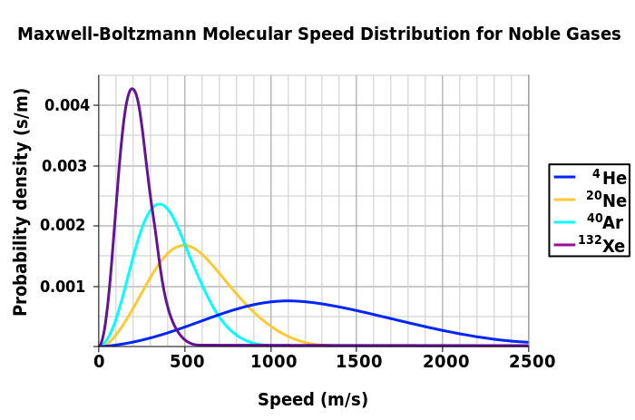
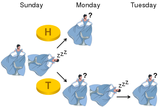

FIZ371 - Scientific & Technical Calculations | 04/01/2024
Emre S. Tasci emre.tasci@hacettepe.edu.tr
Eng. Physics Dept.
Hacettepe University
Ankara, Turkey
Midterm Make-Up Exam#
You can solve the problems analytically or stochastically, it’s up to you. You can present your solution having been calculated on a paper, or as a jupyter notebook, or as a mixture of both.
Please prepare one jupyter notebook per question.
You can use any predefined function from numpy, scipy, math, pandas, random, collections and matplotlib modules – for any other external module/library you should first ask for permission.
Before submitting, download your notebooks as html as well as ipynb format and zip them all.
Name your zip file as <YourName>_FIZ371_20231_MT_Resit.zip (e.g., EmreTasci_FIZ371_20231_MT_Resit.zip)
Pick 3 out of the following 5 questions!
1. Distributions#
Maxwell-Boltzmann distribution relating the probabilities of speeds of gas molecules to the temperature of the environment is defined as:
and at 25oC, it is plotted for some of the noble gases below:

Image Source: Wikipedia/Maxwell-Boltzmann distribution
Suppose that you need to conduct a molecular dynamics simulation of 100000 He atoms at a fixed temperature. Devise an algorithm/method/procedure to assign each one an initial speed and direction with respect to the Maxwell distribution.
(Definitely not necessary for this questions purpose, but if you’d like to have scientifically correct values, you can take \(m_{He} = 6.65\times10^{-27}\) kg, \(k = 1.38\times10^{-23}\) J/K, \(T=300\) K)
2. Decision Theory#
The sleeping beauty is put to sleep on Sunday. That night a coin is tossed: if it’s tails she’s woken the next day (Monday), if it’s heads, she’s woken on Monday, but then is put to sleep and is woken the next day (Tuesday) as well. She immediately forgets about the previous wakings when she falls asleep.
The question goes like this: Upon being awakened, she is asked to guess the probability that heads came up on the last tossing. If you were in her shoes, what would your reply be?

Image Source: Wikipedia/Sleeping Beauty problem)
Note: This is a very famous case with an active debate still ongoing, hence it doesn’t have a definite solution. Your take on the problem is being examined, thus, if you want, you can follow different approaches to analyze the situation.
3. Bayesian Inference#
Suppose that you have been watching Monty’s Hall game for a very long time and have observed that the prize is behind door 1: 45% of the time, behind door 2: 40% of the time and behind door 3: 15% of the time. The rest is as before.
When playing on the show, you pick door 1 and Monty opens:
a) 2nd door to show that there’s no prize behind
b) 3rd door to show that there’s no prize behind
What is the probability for each of the cases that you should switch to win the prize behind the other door? (This question is taken from Dr. Luc Rey-Bellet’s lecture notes)
4. Game of Life#
Modify and run a 25 cell 1-D Game of Life with the following rules for 100 turns:
Boundaries are periodic
For each of the cell at every turn, the rules to be followed are:
Either Rule #90 (with 70% possibility),
or, Rule #102 (with 30% possibility)
Start from a random configuaration of empty & filled cells.
The rules are defined as:
state |
binary |
representation |
\(\rightarrow\) |
outcome (#90) |
representation (#90) |
outcome (#102) |
representation (#102) |
|---|---|---|---|---|---|---|---|
7 |
111 |
◼◼◼ |
\(\rightarrow\) |
0 |
◻ |
0 |
◻ |
6 |
110 |
◼◼◻ |
\(\rightarrow\) |
1 |
◼ |
1 |
◼ |
5 |
101 |
◼◻◼ |
\(\rightarrow\) |
0 |
◻ |
1 |
◼ |
4 |
100 |
◼◻◻ |
\(\rightarrow\) |
1 |
◼ |
0 |
◻ |
3 |
011 |
◻◼◼ |
\(\rightarrow\) |
1 |
◼ |
0 |
◻ |
2 |
010 |
◻◼◻ |
\(\rightarrow\) |
0 |
◻ |
1 |
◼ |
1 |
001 |
◻◻◼ |
\(\rightarrow\) |
1 |
◼ |
1 |
◼ |
0 |
000 |
◻◻◻ |
\(\rightarrow\) |
0 |
◻ |
0 |
◻ |
5. Game Theory#
Suppose that you have failed a course but to your luck, that year the university senate decided to introduce the make-up exams to be taken by the end of the summer. You have to options: you can either study hard through the summer (thus, ruining your one chance to have a vacation) and take the exam, therefore maximizing the possibility for passing it; or, you can have your summer holiday, relax, and start studying for the exam a week before the day. Also, you know that, the lecturer is a lazy person and there is a chance that they might opt to compile problems from the past exams of which you have access to.
Construct the pay-off table stating your reasons where the possibilities are: you are studying hard through the summer or enjoying it vs. the professor picking the questions from past exams or writing new ones…
Draw the reaction-correspondence graph, indicate Nash equilibrium points if there are any.
Calculate the probabilities that you should (have) study all through the summer or not (if any of the probabilities is 0 or 1 then re-construct the pay-off table, and redo the calculations! You can’t also use similar values to those we have covered during the lectures.).